WebYep is a "Web Content Management System" - it enables people
without web design knowledge to edit the content of web pages, just using
the
web browser. By incorporating WebYep into your website every person
that can use a web browser is able to edit the content of the website's
pages.
To incorporate WebYep into your website, you as the web designer need
to install WebYep into the webspace and insert WebYep elements into
the web pages that need to be editable.
One main difference to other web content management systems is, that
you do not need to create your whole website with WebYep. You can take
any "normal" website and just make some parts of some pages "editable",
by replacing the static content with the appropriate WebYep Elements.
This documentation is intended to give you all necessary information
for adding WebYep to your website, inserting and setting up the WebYep
elements in your pages.
WebYep in action
To see WebYep in action, how it works when integrated in a website
and how it is used by the "users" (the ones who edit the content),
you can take a look at the WebYep
Online Demo.
Important: This documentation
partly assumes that you are using the WebYep Extension for
Adobe® Dreamweaver® to
create your website. It refers to version MX 2004 of Dreamweaver, although
the WebYep Dreamweaver Extension
will also work with other version of Dreamweaver (see System
Requirements).
Not using Dreamweaver? In the Reference section all WebYep Elements are described along with their PHP code fragments so you can also insert them into your pages with any other web page editor that allows direct entering HTML/PHP code.
Basics
The basic intend of WebYep is to make parts of a web page editable for
a "user" - someone accessing the page using a web browser,
who provided the right username/password. You as the web designer only
need to insert the appropriate WebYep element in place of a static text
or image in the page and install the webyep-system folder in your website.
Quick setup guide:
If you're using Adobe® Dreamweaver®, install the WebYep Dreamweaver
Extension: Double click the webyep.mxp file coming with the WebYep package.
This will launch the
Extension
Manager and start the installation.
Copy the webyep-system folder coming with the WebYep package into
the root folder of your website (where your homepage - index.html -
resides).
Set the username and password in the file config-inc.php
inside the webyep-system folder (switch to Code View after opening
it with Dreamweaver - this file is PHP code only!) and save it.
Upload the whole webyep-system folder to your webspace (via FTP).
Create a normal HTML page but use ".php" as the file's
extension, not ".html".
Insert any static (non-editable) content to design the page.
In place of text or images that should be editable, insert the
appropriate WebYep Elements.
When using Dreamweaver, choose the WebYep Elements from its object palette,
category "WebYep". Otherwise insert the appropriate PHP code fragment manually – see Reference section, especially also the item about "The Init Code") .
Also insert the WebYep Element "Logon Button" somewhere
in your page.
Save and upload your page to the webspace (via FTP).
To "activate" WebYep in Dreamweaver, right click
the webyep-system folder in the Remote Site file list
and choose "Activate WebYep" in the appearing popup menu. To see how to activate WebYep using other applications, see "Activation, Technical Details", for further details see "Installation".
What are "WepYep Elements"?
WebYep Elements are little fragments of PHP code, that are embedded
in the HTML code. When using Dreamweaver and the WebYep Dreamweaver Extension
these Elements can be inserted by using the object palette (tab "WebYep")
or the "Insert" menu. But you can also insert the necessary PHP code fragments directly - see the reference for each WebYep Element for details.
Layout of the webyep-system folder
webyep-system
config-inc.php (this is where you set up the username and password)
info.php (shows system information, installed licenses and WebYep
status)
program contains all WebYep program scripts and data
data
(contains the data entered/uploaded by the users)
documents (list of pages using WebYep)
license (license codes)
... various files containing all data entered by the users
(texts, images, ...)
The "data" folder should be backed up from time to time (see "Backup").
Installation
WebYep Dreamweaver Extension
If you are using
Adobe® Dreamweaver® to
create your web pages, you can also use the WebYep Dreamweaver Extension.
The WebYep Dreamweaver Extension is the file "webyep.mxp" -
install it by simply double clicking it. This will start the "Extension Manager" - just follow its instructions to install
the extension.
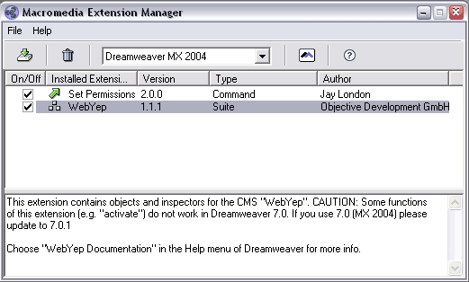 The Extension Manager with installed
WebYep Dreamweaver Extension
Remark: If you have installed more than
one Adobe® application, be sure to select the right application
before installing. You can also transfer extensions from one application
to another with the "File / Import Extensions..." menu command.
The webyep-system folder
The core of WebYep is a set of PHP scripts contained in a folder named
"webyep-system". This webyep-system folder must be uploaded onto
your webspace (like all other pages/images of your website) - usually
into
the root folder of your website, where your homepage (index.html
or index.php) resides.
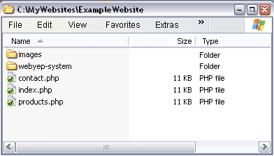 The webyep-system folder in the root folder of
a website
Before uploading the webyep-system folder to your webspace you should
setup the configuration: Whenever a user (the person who is editing
the content of the website) wants to change the website's content, he/she
has to login with username and password (by clicking the WebYep Logon
Button in a page). This username and password are the
only configuration
settings you have to take care of:
Open the config-inc.php file inside the webyep-system folder.
Switch to "code view" in Dreamweaver to read it - this file contains
only PHP source code!
Enter your desired username and password inside the quotes after webyep_sAdminName and webyep_sAdminPassword.
e.g.:
// Username and password for edit mode.
// You can freely choose these and they must be entered by
//
users after clicking the lock icon to logon before being
//
allowed to start editing.
$webyep_sAdminName = "admin";
$webyep_sAdminPassword = "test";
Support for special character sets
You can also set the configuration variable $webyep_sCharset to
an HTML character set.
If you have set a character set in your web pages
(with the "Content-Type" meta
tag), you should also set this character set in this configuration variable
(e.g. "iso-8859-2" for
eastern european languages, or "utf-8"). This will make sure, WebYep displays the special
characters using this character
set. But it will also stop WebYep from converting texts to HTML entities! WebYep
will instead
insert the meta tag in each of its editor pages.
To install WebYep on your web server simply upload the webyep-system
folder like all your pages and images via FTP. You can this with any FTP appication or directly from Dreamweaver's site window with the
"put" command.
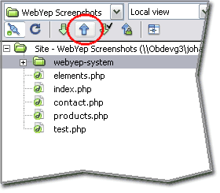 Upload ("put") the webyep-system folder with
your other files into the server
To enable WebYep (and thus PHP) to store data on the web server on most
server systems you must give PHP permission to do so by setting the unix
file
permissions
for the folder PHP should store data in.
From within Dreamweaver the activation can be accomplished
by choosing the "Activate WebYep" command from the context
menu showed when right clicking the webyep-system folder in the list
of remote files
in Dreamweaver.
List the remote files in the site window (or "files" panel), by choosing
"Remote view" in the upper right popup menu. Then right click the "webyep-system"
folder and choose "Activate WebYep" in the appearing context menu.
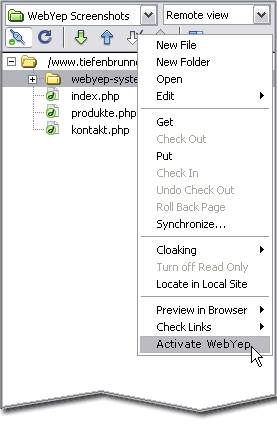 The list of remote files (the files on the
server).
Right click the webyep-system folder in this list and choose "Activate WebYep".
Whether the activation of WebYep was successful can be verified by calling
the WebYep status/info page:
http://www.mywebsite.com/webyep-system/info.php
Summary
The Dreamweaver Extension:
A file named "webyep.mxp" - it contains forms, inspectors, etc. for
inserting and setting up the WebYep Elements in your web pages using
Dreamweaver®.
Install by simply double clicking it and following the instructions of the
thereby launched Extension Manager.
The webyep-system folder:
A folder named "webyep-system" with various PHP scripts etc. - the
core of the WebYep system.
This folder should be put in the root directory of your website (where your
homepage – index.html or index.php – resides).
Configuration:
Set username and password in config-inc.php.
Installation on the web server:
Upload the webyep-system folder
like the other files of your website to your web
server (usually directly with Dreamweaver via FTP).
Activation:
in Dreamweaver: Right click the webyep-system folder in the list of remote files ("Remote
view" in the site window) and choose "Activate WebYep". Or use any other FTP/SCP application to set the access priviliges for the "data" folder inside the webyep-system folder accordingly.
Checking:
You can check the status of your WebYep installation via the URL
http://www.mywebsite.com/webyep-system/info.php
Activation, Technical Details
From a technical point of view by "Activating" WebYep, the Unix access rights for the "data" subfolder inside the webyep-system folder are set to "read, write and execute by everyone" - this correspond to the Unix mode "0777".
Warning: A weak PHP configuration by your webspace provider might lead to security problems. If your provider does not set access restrictions like "open_base_dir" properly, PHP scripts from other web sites on the provider's server might be able to modify or delete your WebYep data! Also PHP settings like "register_globals" and "allow_url_fopen" should be turned off, as they represent a potential security risk. This does not relate to WebYep only but to all PHP scripts of your web site! Please make sure your web space provider has set up PHP securely!
To activate WebYep without Dreamweaver, upload the webyep-system folder to your webspace's home directory (where your homepage index.html or index.php is located) using your favorite FTP application. Then change the access privileges of the "data" folder accordingly.
Here's an example using the application CyberDuck for FTP upload:
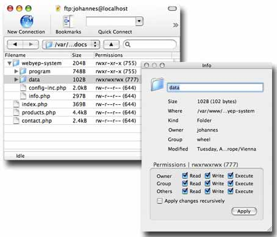
Select the "data" folder inside the webyep-system folder and press Command "I" to bring up the info panel. In there set the permissions and click "Apply".
Backup
WebYep saves the texts and images entered and uploaded by the users
in a folder on the server. Although your provider should create backups
of your whole website every day, it is a good idea to create backups
of the WebYep data
by yourself.
Where does WebYep safe its data?
When looking at the files of your website on the server (by
connecting via FTP) you will find a folder called "data" inside
the webyep-system folder. In this folder WebYep stores all texts entered
or images uploaded
by the users.
To create a backup simply download the whole "data" folder.
How do I restore data from a backup?
Remove the whole webyep-system folder in the server (if data was
lost or distorted chances are that the webyep system was damaged also).
Replace the "data" folder inside the webyep-system folder on the
server by your backup copy (e.g. by removing the folder on the server
and uploading the backup copy).
When accessing you website you might have to reenter the license
code.
Be sure to use the same version when reinstalling WebYep -
not all versions of WebYep are data compatible. You can check the installed
version by accessing the WebYep status info page:
http://www.mywebsite.com/webyep-system/info.php
System
Requirements
To integrate WebYep into your website you don't need any additional
tools - the applications you usually use to build websites are sufficient
to integrate WebYep. But for
Adobe® Dreamweaver®there
is an extension coming with WebYep, which makes it
more easy to
insert and adjust the WebYep Elements.
If you want to use the WebYep Dreamweaver Extension, you'll need
Adobe® Dreamweaver® MX, MX 2004 or 8 (Mac or PC). To use the the Extension
with Dreamweaver MX
2004 (= Version 7.0), you will need to update
to version 7.0.1 (this update is free and recommended anyway).
The webspace your website will be installed in, needs PHP support (min.
PHP 4.1)
The PHP support must be "as usual". If it is reduced
in some kind, WebYep might not function properly.
It must be possible to give PHP the right to create, change
and delete files in a certain directory (which is usually no problem!)
Windows web servers are supported as long as the above is true -
but there have been some problems reported from users trying to use
WebYep
(and other PHP scripts) on Windows servers...
WebYep does not need any database (like MySQL)!
Summary:
System requirements on your PC/Mac:
None
To use the WebYep Dreamweaver Extension you need
Adobe® Dreamweaver® MX, MX 2004 (updated to 7.0.1) or 8 (Mac or PC).
System requirements on the web server:
Full PHP support (Version 4.1 or newer)
No database needed!
White Labeled Version
If you optained the white label option when purchasing your WebYep license, you can present WebYep as you own product, with your corporate design and your own logo.
Usually you are only allowed to change graphical components of WebYep (like images and the style sheet), to adopt the visual appearance of WebYep to your website's design. But changing the WebYep logo or removing the copyright notice is not allowed.
By optaining the "white label" option when purchasing WebYep, you may also change these components of WebYep.
You will receive a special license code that will enable this option in WebYep.
How WebYep becomes "your product"
To give WebYep your corporate design and present it as "your product", you can perform the following changes:
Change the WebYep logo
The WebYep logo is located in the file logo.gif in the "program/images" subfolder of the webyep-system folder. Simply replace it with your personal logo.
Button icons, etc.
The "program/images" subfolder also contains several icons used for various buttons in the WebYep user inteface. Change/replace these as needed.
Fonts, colors, etc.
The subfolder "program" of the webyep-system folder contains the style sheet styles.css used for all WebYep editor windows and help pages. Change its content to adopt font faces, colors etc.
Product name
To change to product name from "WebYep" to your personal produkt name, open the configuration file config-inc.php in the webyep-system folder. In there you will find the line
$webyep_sProductName = 'MyProduct';
Change the text between the single quotes, but be sure to leave the single quotes intact and to not use any single quotes as part of the product name!
To use a WebYep system modified that way, you need a WebYep license with the white label option for the domain (URL or address) the website is accessed under.
For testing and during development you usually run WebYep via a local web server (on your desktop or on a server machine in you local network). If the web server running WebYep is not accessible from the internet (has a local IP address), then you do not need to install a WebYep license with white label option.
But if you install your modified WebYep system on a public web server, you will need to install a proper WebYep license with white label option (matching the host name by which that server is accessed) to use it.
Tutorials
Tutorials
Here you can find some examples of using WebYep which can help you get
a deeper insight of how to apply WebYep to your pages. These tutorials
assume that you are using
Adobe® Dreamweaver® to
build your web pages and thus can make use of the WebYep Dreamweaver
Extension.
Important hints regarding Dreamweaver usage:
The Dreamweaver Object Palette:
Dreamweaver's object palette (menu "Window", item "Insert")
is where you can find icons for inserting various elements like tables,
images
etc.
After installing the WebYep Dreamweaver Extension, this palette is extended
by the category "WebYep" which contains icons for inserting the WebYep
Elements.
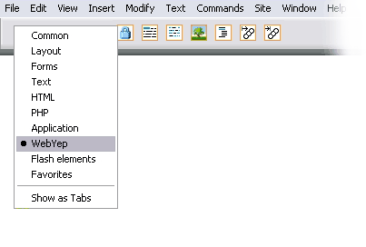
Make all invisible elements visible
As the WebYep Elements are tiny pieces of PHP code, they can be made
visible in Dreamweaver by enabling (making visible) the "Invisible
Elements":
Go to menu "Edit", item "Preferences"
Switch to category "Invisible
Elements"
Enable all listed elements.
The WebYep-Elements in your page should then look like this:
You can quickly hide/show these "Invisible Elements" by choosing
menu
"View", submenu "Visual Aids", item "Hide All" (or. "Show
All").
Positioning the text cursor by clicking somewhere inside the Dreamweaver
document is good enough most of the time. But if you want to place the
text cursor exactly before or after a specific part of your
document (before or after a tag or HTML element), using the "tag selector"
(at the lower left corner of a Dreamweaver document) would be preferable:
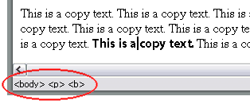
Clicking somewhere inside the bold sentence will show a hierarchy
of tags in the tag selector as shown in the picture above: The cursor is
inside a <b> tag, which is inside a <p> tag, which is inside a <body>
tag.
Clicking the "<b>" tag in the tag selector would then select the
whole bold sentence. Pressing the "cursor left" (or "cursor right")
key afterwards would place the text cursor exactly before (or after)
the <b> tag (and thus the bold sentence).
If your try to achieve this by simply clicking at the end of the sentence,
chances are good that you end up inside the <b> tag instead
of after it.
Assigning CSS styles
You can also use the tag selector to assign CSS styles to an HTML tag.
To do so, position the text cursor somewhere inside the tag
you want to assign a style to. The tag selector will show the tag hierarchy
that leads to the current position.
Now click the tag in the tag selector to which you want to assign
the style to with the right mouse button and in the context
menu popping up look in the submenu "Set Class" for your desired
style and choose it.
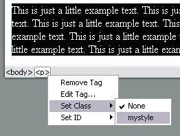
That way you can easily assign CSS styles to tags that surround WebYep
Elements - e.g. a Paragraph (<p> tag) with a WebYep Short Text
Element inside it, thereby defining the look of the WebYep Element itself.
In this tutorial you will learn how to use the basic WebYep elements,
how to apply them to an example page and how to test this example page.
Please use a website with WebYep installed for this tutorial (see Installation).
Creating the page, inserting the WebYep Elements
1. Create a new document called "wy-yesy.php".
2. Insert three empty paragraphs.
3. Position the cursor in the first line.
4. Click the WebYep Short Text Element in Dreamweaver's Object Palette
(category "WebYep"). This will insert that element into your
page at the current cursor position.
5. Position the cursor in the second line.
6. Insert (right one after the other) a WebYep Image Element (fourth
from left in the object palette) and a WebYep Text Element (third from
left).
7. Position the cursor in the third line.
8. Insert a WebYep Logon Button (left most in the object palette).
You should now see four WebYep Elements in your page (tiny yellow/orange
icons) - please make sure that you have enabled the display of the "Invisible
Elements" (see Tutorials Introduction).
Configuring the WebYep Elements
1. Click on the WebYep Element (the yellow icon) in the first line:
The Short Text Element.
2. In the inspector panel (menu "Windows", item "Properties") the properties
of the WebYep Short Text Element are displayed.
3. Enter "Title" as the "Fieldname".
4. Click the first WebYep Element in the second line: The Image Element
5. Enter "Photo" as the image name. For "HTML-Attributes"
enter:
align="left" hspace="20"
6. Click the second WebYep element in the second line: The Long Text
Element.
7. Enter "Text" as the fieldname.
Please make sure you have transferred the webyep-system folder to your
web server and have activated WebYep (see Installation).
1. Transfer the page (wy-test.php) to your web server (upload via FTP).
2. Open the page in your web browser by entering the appropriate address
(URL) - e.g.:
http://www.mywebsite.com/wy-test.php
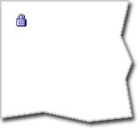
3. Click the lock icon in the page (the WebYep Logon Button).
4. When the logon window pops up, enter the username and password you
configured when installing WebYep (default is username "admin" and no
password).
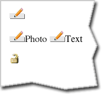
5. Several edit icons (with a pen symbol) should appear - click them
to edit the content of your page.
In this tutorial you will learn how to use the WebYep Menu Element.
Please use a website with WebYep installed for this tutorial (see Installation).
Creating the page, inserting the WebYep Elements
1. Create a new document "wy_menu.php". Please don't work
on unnamed/unsaved documents! Create the file and immediately save it
under
the name "wy_menu.php"
before continuing.
2. Insert two empty paragraphs.
3. Position the cursor in the first paragraph.
4. Insert a WebYep Logon Button (left most item in Dreamweaver's object
palette, category "WebYep").
5.. Position the cursor in the second paragraph.
6. Insert a table: one row, two columns, 10 pixels cellpadding.
Your page should now look approximately like this – please make sure
that you have enabled the display of the "Invisible Elements" (see Tutorials
Introduction):
7. Position the cursor in the left table column.
8. Insert a WebYep Menu Element (fifth icon from the left in the object
palette).
9. Position the cursor in the right table column.
10. Insert two empty paragraphs.
11. Position the cursor in the first of these two paragraphs.
12. In the inspector choose "Format: Heading 1" for this paragraph.
13. Insert a WebYep Short Text Element (second from left in the object
palette).
14. Position the cursor in the second paragraph (of the right table
column).
15. Insert a WebYep Long Text Element (third from left in the object
palette).
Your page should now look approximately like this:
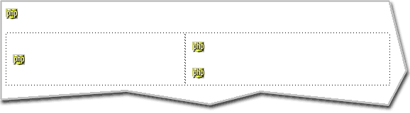
1. Click the WebYep Element in the left table column (the Menu Element).
2. Enter "Products" as the menu name in the inspector. Please make sure
that "wy_menu.php" is listed as "Page (URL)".
3. Click the upper WebYep Element in the right table column (the Short
Text Element).
4. Enter "Title" as the fieldname in the inspector.
5. Click the lower WebYep Element in the right table column (the Long
Text Element).
6. Enter "Text" as the fieldname.
Testing the page
Please make sure you have transferred the webyep-system folder to your
web server and have activated WebYep (see Installation).
1. Transfer the page (wy_menu.php) to your web server (upload via FTP).
2. Open the page in your web browser by entering the appropriate address
(URL) - e.g.:
http://www.mywebsite.com/wy_menu.php
3. Click the lock icon in the page (the WebYep Logon Button).
4. When the logon window pops up, enter the username and password you
configured when installing WebYep (default is username "admin" and
no password).
7. Create three menu items by entering each items title in the textfield
at the bottom of the window and clicking "add".
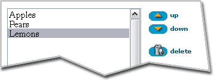
8. Save the menu by clicking "Save".
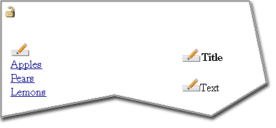
9. Click one of the menu items.
10. Enter title and text for this page by clicking the edit buttons
beneath "Title" and "Text".
Notice: You can manually create links to a menu item's target page
by adding the following to the URL of the link:
?WEBYEP_DI=x
where "x" stands for the ID of the menu item - e.g.:
some_menu_item_page.php?WEBYEP_DI=1
You can find out the ID of a menu item by simply clicking the menu item and observing
the URL displayed in your browsers address field. At the end of the
displayed URL you should see the "WEBYEP_DI=xxx".
The ID of a menu item has nothing to do with it's position in the menu (order)!
In this tutorial you will learn the use of the WebYep Loop Element.
Please use a website with WebYep installed for this tutorial (see Installation).
Creating the page, inserting the WebYep Elements
1. Create a new document "wy_loop.php". Please don't work
on unnamed/unsaved documents! Create the file and immediately save it
under the name "wy_loop.php" before continuing.
2. Insert two empty paragraphs.
3. Position the cursor in the first paragraph.
4. Insert a WebYep Logon Button (left most item in Dreamweaver's object
palette, category "WebYep").
5. Position the cursor in the second paragraph.
6. Insert side by side a WebYep Image Element and a WebYep Short Text
Element (fourth and second from left in the object palette).
Your page should now look approximately like this – please make
sure that you have enabled the display of the "Invisible Elements" (see Tutorials
Introduction):
7. Position the cursor in the second paragraph, between the two WebYep
Elements.
8. Select the whole paragraph by clicking the <p>-tag in the tag selector:
9. Press the "cursor left" key to position the cursor exactly before the
paragraph. (see also "Positioning
the cursor" in
the tutorial sections introduction)
10. Insert the WebYep Loop Start Element (third from right
in the object palette).
11. Position the cursor exactly after the paragraph by using
the method described above.
12. Insert the WebYep Loop End Element (second from right in
the object palette).
The paragraph is now enclosed in a loop element. Your page should
now look approximately like this:
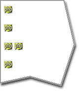
1. Select the WebYep Element in the second line (the Loop Start Element).
2. Enter "Offers" as the loop name in the inspector.
3. Select the left WebYep Element in the third line (the Image Element).
4. Enter "Photo" as the image name.
5. Select the right WebYep Element in the third line (the Short Text
Element).
6. Enter "Text" as the field name.
Testing the page
Please make sure you have transferred the webyep-system folder to your
web server and have activated WebYep (see Installation).
1. Transfer the page (wy_loop.php) to your web server (upload via FTP).
2. Open the page in your web browser by entering the appropriate address
(URL) - e.g.:
http://www.mywebsite.com/wy_loop.php
3. Click the lock icon in the page (the WebYep Logon Button).
4. When the logon window pops up, enter the username and password you
configured when installing WebYep (default is username "admin" and
no password).
5. Click the edit buttons to upload an image file ("Photo") and enter
some text ("Text").
6. Then click the "+" icon to add more loop blocks.
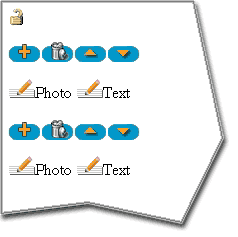
Click the trash icon to remove whole loop blocks, click the "up"/"down"
icons to rearrange the blocks.
In this example the loop block contains only WebYep Elements, but it
can contain any content: Static HTML code (like text or images) and WebYep
Elements.
Reference
Reference
WebYep Elements are little fragments of PHP code, that are embedded in the page's HTML code. When using Dreamweaver and the WebYep Dreamweaver Extension these elements can be inserted by using the object palette (tab "WebYep") or the "Insert" menu.
But you can also insert them using any other web page editor that allows inserting PHP code - see the reference for each WebYep Element for details.
Please remember that pages that are to contain WebYep Elements must have the file filename extension ".php" instead of ".html"!
When using the WebYep Dreamweaver Extension, the different WebYep Elements are placed inside your pages via icons
in Dreamweavet's Object Palette. By choosing the "WebYep"
category in the object palette's popup menu, you can see
the icons for the various WebYep Elements.
When clicking one of the WebYep Element icons in the object palette,
the corresponding WebYep Element gets inserted into the page at the current
cursor position:
The inserted WebYep Element is displayed as a "PHP" icon -
when selecting this icon, the Dreamweaver inspector panel will show the
attributes of
this element.
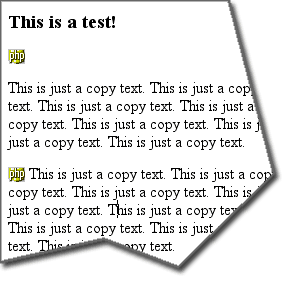 Inserted WebYep Elements appear as "PHP"-icons
The inspector showing the attributes of the
WebYep Image Element
Important notice: Please
make sure that the "Invisible Elements" are made visible in
Dreamweaver: Menu "View / Visual Aids / Invisible Elements".
And also make sure the PHP icons are activated in the preferences: Menu
"Edit / Preferences" category "Invisible
Elements", checkboxes "Visual Server Markup" and "Nonvisual
Server Markup" must be checked.
with any other elements, text or images. You can for example format
a WebYep Short Text Element via CSS with any normal text:
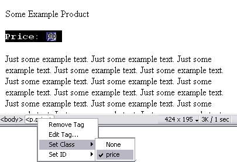 The WebYep Element can be formatted with
other text e.g. via CSS
like you would do with any other content in
your page.
Summary
WebYep Elements are small pieced of PHP code.
When using the WebYep Dreamweaver Extension, they are inserted into your page by clicking one of the
icons in Dreamweaver's object palette, "WebYep" category.
Pages containing WebYep Elements must have the filename extension
".php" instead of ".html".
WebYep elements are displayed as "PHP" icons in your page (if the
"Invisible Element" are enabled in the "View" menu
and the "Visual/Nonvisual Server Markup" are enabled in the
preferences).
When selecting one of these "PHP" icons, the Dreamweaver inspector
panel shows the attributes of the selected WebYep Element.
You can format WebYep elements like any other content in your page
(e.g. via CSS).
The WebYep Init Code
Every page containing WebYep Elements needs a piece of PHP code that sets up the whole WebYep system. This code must be located at the very beginning of the document, before anything else – there must not even be an empty line before it in the document file.
It must also be located before the <DOCTYPE> directive. Allthough that directive also must be the first thing in the document, this will not cause any problems, as the PHP code does not reach the browser! The PHP code is processed (and "consumed") by the server and in the HTML code reaching the browser, the <DOCTYPE> will again be the first thing.
The Init Code is inserted automatically if you are using any of the supported web design apps (like Dreamweaver) and their WebYep plugin or extension. But if you are creating your pages "by hand" or at least are inserting the WebYep PHP code fragments manually, you also need to place the WebYep Init Code manually.
This is the WebYep Init Code:
(Please make sure to copy all the code, from the first "<?php" to the last "?>")
<?php // WebYep init WebYepV1
/* ><table><tr><td bgcolor=white><h2>WebYep message: Error, PHP inactive</h2>
<font color=red>The PHP code in this page can not be executed!<ul>
<li>Are you launching this page directly form your harddisc (e.g. via Dreamweavers
"Preview in Browser" instead of accessing it via a webserver?</li>
<li>Has this file the correct file extension for PHP scripts?
WebYep pages must have the ".php" extension and <b>not</b> ".html" or ".htm"!</li>
</ul></font></td></tr></table><!--
*/
$webyep_sIncludePath = "./";
$iDepth = 0;
while (!file_exists($webyep_sIncludePath . "webyep-system")) {
$iDepth++;
if ($iDepth > 10) {
error_log("webyep-system folder not found!", 0);
echo "<html><head><title>WebYep</title></head><body><b>WebYep:</b> This page can not be displayed <br>Problem: The webyep-system folder was not found!</body></html>";
exit;
}
$webyep_sIncludePath = ($webyep_sIncludePath == "./") ? ("../"):("$webyep_sIncludePath../");
}
if (file_exists("${webyep_sIncludePath}webyep-system/programm")) $webyep_sIncludePath .= "webyep-system/programm";
else $webyep_sIncludePath .= "webyep-system/program";
include("$webyep_sIncludePath/webyep.php");
// -->?>
Summary
Every page using WebYep Elements also needs the WebYep Init Code.
The Init Code must be the very first thing in the document.
You do not need to care about the Init Code, if you are using one of the supported web design apps and the corresponding WebYep plugin or extension – it is placed automatically.
Logon
Button
The Logon Button icon in the Dreamweaver object
palette
When a user wants to edit the content of a page, he or she must authenticate
with a username and a password: By clicking the WebYep Logon
Button, which can be placed anywhere in any page, a popup
window containing the logon form opens. After entering the right username/password,
that pages appear in edit mode.
This element is represented by the following PHP code:
Arguments for the webyep_logonButton() PHP function call: (see "Attributes of the Logon Button" below for details)
true/false: A boolean – whether the logon button should be visible. true if it should be visible. false if not – the button will still be there and clickable (if you know where to click).
Independently of this setting, logging in still requires the correct username and password!
See also Configuring WebYep on
how to configure this username and password.
The Logon Button placed at the lower left corner
below the navigation.
The Logon Button does not have to be placed on every editable
page. Placing it on one page is enough - after successful
logon every editable page will be display in edit mode until the user
logs off by clicking the Logon Button again (which will look a bit different
when logged in).
This is accomplished by setting some (partially encrypted) Cookies in
the users web browser - thus it is necessary to enable Cookies in
your web browser to edit the pages content with WebYep.
Technical notice: Username
and password are temporarily stored in Cookies in the users computer
memory, not permanently on the harddisc (Session Cookies)! The password
is stored encrypted in a way that is only valid for one day - so even
if
someone
gets hold
of
the users computer and is able to read out the browsers memory, this
attacker wont know the password and the stolen cookie will not be of
any use the day after the user entered the password.
Nevertheless username and password are transferred unencrypted when logging
in - so if some hacker is able to listen to the users network communication
while logging in, he/she can get hold of the login credentials. The only
way to avoid this, is to use an encrypted HTTP connection (https, SSL).
The Dreamweaver inspector showing the Logon
Button's attributes
visible
If this attribute is deactivated (the checkbox is unchecked),
the button will not be displayed as the lock icon, but instead as a fully
transparent (thus invisible) image. That way the user can
only click it, if she/he knows where it is! Usually you might place it
that way right beside or
below a logo or other easily locatable elements in a page.
Hiding the Logon Button that way makes logging in a bit like mine detection,
but might keep some "curious" website visitors from playing
around with the logon window. But if you have configured a save, not
easily guessable
password, this should not be necessary.
Short
Text
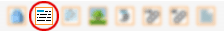 The Short Text icon in the Dreamweaver object
palette
The WebYep Short Text Element is useful for short text passages like
headlines, product names or prices. Contrary to the Long Text Element
the user can not format the content of this element. So the web designer
is in full control over the look of the Short Text's content.
This element is represented by the following PHP code:
Arguments for the webyep_shortText() PHP function call: (see "Attributes of the Short Text Element" below for details)
"Fieldname": A string – the field name for this element.
true/false: A boolean – the scope for this element. true if the element should have the same content on all pages (global). false if it should have different content on each page it appears on.
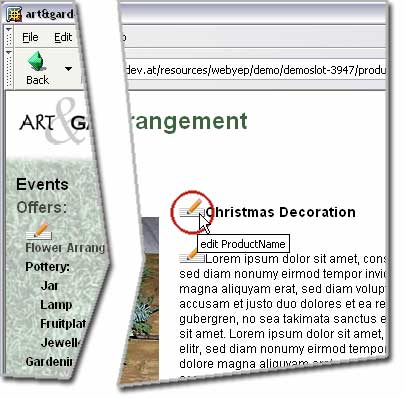 The Short Text Element in action - by clicking
the "Edit" button, the Short Text Editor window opens
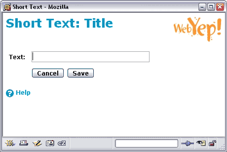 The Short Text Editor window
The Dreamweaver inspector showing the Short Text
Element's attributes
Field name
A distinctive name for that element. This name will be displayed in
the page in edit mode to give the user a hint on what this elements content
stands for and to distinguish the different WebYep Elements in a page.
Content
When set to "for this doc only" the elements content is unique
for this page - even if another element on a different page has the same
name. If set to "for all documents" the content will
be the same on all pages for elements
of
this
kind
that use the same
name.
Long
Text Element
The Long Text icon in the Dreamweaver object
palette
This element is useful for long text passages like product descriptions
or news articles - or even whole pages. The text content of this element
can be formatted by the user with some rudimental formatting options
(like bold text or bullet lists).
The possibilities of formatting the text are limited within the Long Text Element (see below). That is why it is especially useful if you as the web designer want to stay in control of the styling of the text.
If you want to give more control over the text's styling to the editors, the Rich Text Element might be more useful.
This element is represented by the following PHP code:
Arguments for the webyep_longText() PHP function call: (see "Attributes of the Long Text Element" below for details)
"Fieldname": A string – the field name for this element.
true/false: A boolean – the scope for this element. true if the element should have the same content on all pages (global). false if it should have different content on each page it appears on.
"": A string – obsolete, pass an empty string ("").
true/false: A boolean – whether email links should be encoded. true if email addresses entered in the text element should be encoded using JavaScript. false if they should be simply output as HTML.
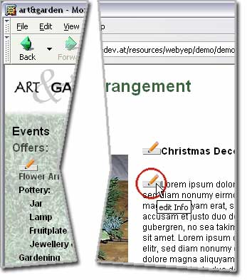 The Long Text Element in action - by clicking
the "Edit" button the Long Text Editor window opens
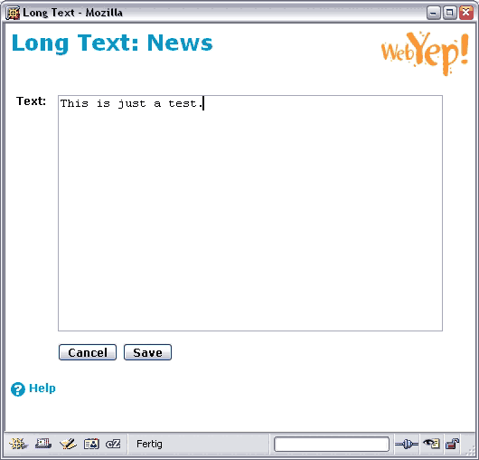 The Long Text Editor window
entered:
when
entering the text
the
text will be displayed as
e.g.:
http://www.test.com
A link to www.test.com
- the target page will be displayed in a new browser window (target
= "_blank")!
A link to the entered
email address (a "mailto" link). The link might be encoded to keep
SPAM spiders from steeling the email addresses. See Encoding
mail links for details.
<LINK:someotherpage.php Click
here to get to the other page>
The text "Click
here to get to the other page" as a link to "someotherpage.php".
The user can also enter full URLs ("http://xxx.yyy.com/xxx/yyy.html").
Note the space between the URL and the link text! No new browser
window will be opened - the target page will be displayed in the
same window.
The text "Some
bold text" formatted in bold font (using the <strong> tag)
Some bold text
<EXAMPLE Some
text in a special style>
The text "Some
text in a special style" formatted with the CSS style "EXAMPLE"
(using <span class="EXAMPLE">...)
This way you as the web designer can create any CSS style to be
used by the users (that edit the content) - just remember that
the
style name must be all uppercase!
Some
text in a special style
---
A horizontal ruler.
The three dashes must appear at the very beginning of a line!
* First list item
** A subitem
* Second list item with a quite long text
* Third list item
By placing an asterisk
(or the bullet symbol) at the beginning
of a text line, this line gets formatted as a bullet list item.
The bullet will be displayed
as a small black dot or (via CSS)
as some arbitrary GIF or JPG image. See "Formatting
lists"
below.
The user can also span list items across several lines (inserting
line breaks in an item) if the consecutive lines start with a
space character.
First list item
A subitem
Second list item with a quite long text
Third list item
* First item
This is all part of the first list item.
* Second item
You can place several lines of text into a single list item by placing two spaces at the beginning of the line.
First item
This is all text of the first list item.
Second item
* <BOLD First item>
This is all part of the first list item.
* Second item
...
You can also combine different formatting commands.
First item
This is all text of the first list item.
Second item
+ First list item
++ A subitem
+ Second list item with a quite long text
+ Third list item
By using a "+" (plus) instead of the asterisk, an ordered list is created. How to list is numbered (and other visual attributes) depends on the CSS stiles for the <ol> and <li> tags you set up for the page. See "Formatting lists" below.
First list item
A subitem
Second list item with a quite long text
Third list item
aaa | bbb | ccc
111 | 222 | 333
By using the "|" symbol
you can create simple tables. The "|" serves as the column
delimiter.
The look of the table must be defined by creating CSS stiles
for the <table> and/or <td> tags – see "Formatting
tables" below.
aaa
bbb
ccc
111
222
333
The formatting option <EXAMPLE Some
text in a special style> assumes that you have defined
a CSS
style ".EXAMPLE" in your
page/website. It is important to use only uppercase letters in such CSS
styles.
Placing the Text Element
Please always remember that the Long Text Elements produces HTML code!
When the user creates a bullet list for example the Long Text Elements
creates <ul> and<li> HTML tags. Thus it is important to place
the Long Text Element at a position in your page where such HTML tags
are allowed!
The safest place is inside a <div> tag.
Not ideal would be a paragraph (<p> tag) as HTML does not allow
bullet lists
inside a paragraph.
To determine the HTML tag in which you have placed the Long Text Element
simply click the PHP icon representing the Long Text Element and take
a look at Dreamweaver's Tag Selector (at the bottom of the document window):
The right most listed tag is the tag that encloses your Long Text
Element.
If you find your Long Text Element placed inside a <p> tag you can change
it into a <div> tag by clicking the <p> tag in the Tag Selector with
the right mouse button and choose "Edit Tag...".
The Long Text Element creates bullet lists by using
the <ul>
and <li> HTML tags. Therefore you can format these lists by defining
CSS styles for these tags.
For example you could create a style:
ul { list-style-position: outside; list-style-image:
url(bullet.gif); }
to define the image "bullet.gif" as the bullet symbol used in all lists.
If you want your stile to only change the look of lists inside the
WebYep Text Element (and not all lists in the page), embed the Text
Element in a <div> tag, give that tag a CSS class (class="someclassname")
and change the name of the above stile from "ul" to ".someclassname
ul".
To only stile list items of a specific indention level, you need to repeat the tag name ("ul") in the CSS style's name (selector):
.someclassname ul ul { .....; }
for instance would only define the stile for second level items and deeper, but not the main items.
To style ordered lists created with the "+" sign, use the "ol" tag name instead of "ul" in the style names above.
If you want your stiles to only change the look of tables inside the
WebYep Text Element (and not all tables in the page), embed the Text
Element in a <div> tag, give that tag a CSS class (class="someclassname")
and change the name of the above stiles from "table" to".someclassname
table" and from "td" to ".someclassname
td".
Attributes of the Long Text Element
The Dreamweaver inspector showing the Long
Text Element's attributes
Fieldname
A distinctive name for that element. This name will be displayed in
the page in edit mode to give the user a hint on what this elements content
stands for and to distinguish the different WebYep Elements in a page.
Content
When set to "for this doc only" the elements content is unique
for this page - even if another element on a different page has the same
name. If set to "for all documents" the content will
be the same on all pages for elements of this kind that use the same
name.
If a user enters an email address into a Long Text Element,
WebYep will display it as a clickable link ("mailto" link).
If you enable the "Encode EMail Links" option, WebYep will encode these
links to keep SPAM spiders from collecting the email addresses.
Do do so, WebYep uses a JavaScript based encoding. If the visitors
of your website have deactivated JavaScript, they will only
see these email addresses in the form:
name(_AT_)domain.com
and the email addresses will then not be clickable.
Image
The Image Element icon in the Dreamweaver object
palette
By placing a WebYep Image Element instead of a normal image into your
page, you enable the users to change this image by uploading some other
GIF/JPG via their web browser.
This element is represented by the following PHP code:
Arguments for the webyep_image() PHP function call: (see "Attributes of the Image Element" below for details)
"Fieldname": A string – the field name for this element.
true/false: A boolean – the scope for this element. true if the element should have the same content on all pages (global). false if it should have different content on each page it appears on.
'vspace="10"': A string (optional) – HTML attributes for the <img> tag.
Can hold arbitrary attributes/values for the HTML image tag - e.g.: 'hspace="10" align="left"'.
Be careful with the quotes - double quotes inside (for HTML), single quotes outside (for PHP)!
"some_other_page.php": A string (optional) – the URL of a page this image should link to.
Can also be a full URL (http://...).
If passed as an empty string (""), the image is not a link initially, but still can be made one by the user.
"contentFrame": A string (optional) – the name of the frame, that should be the target of the link.
Pass an empty string ("") if you're not using frames and do not want to open the linked page in a new window.
Use "_blank" for "open in a new window".
70: An integer – the width of the image or it's thumbnail, or zero if it should not be considered.
90: An integer – the height of the image or it's thumbnail, or zero if it should not be considered.
true/false: A boolean – whether this image should be displayed as a thumbnail. true if the image should be displayed in the page as a thumbnail with a size specified by the width/height parameters. Clicking the thumbnail will display a popup window with the original image false if the image should be downsized to the dimensions specified by the width/height parameters.
Please see "Attributes of the Image Element" below for details regarding the resizing and thumbnail generation.
Users can upload new images directly with the web browser with a simple
click on the "Edit" button beside a WebYep Image Element
in a web page. Clicking the "Edit" button opens the Change
Image Window which lets users upload a new image file or
delete the current one.
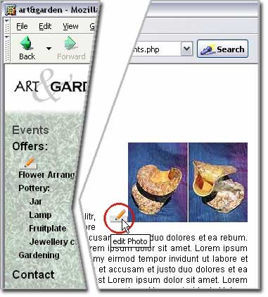 The Image Element in action - by clicking
the "Edit" button the user opens the Change Image Window
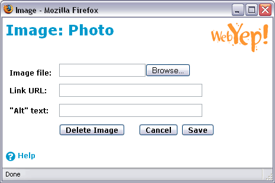 The Change Image Window
Users can also specify the URL of a page to be opened, if a visitor clicks on the image (if the image is not set to be a thumbnail and the designer as not already set a URL– see blow). Also the "alt" text (the value for the <img>-tag's "alt" attribute) can be specified, to increase accessibility.
The Dreamweaver inspector showing the Image
Element's attributes
Image name
A distinctive name for that element. This name will be displayed in
the page in edit mode to give the user a hint on what this elements content
stands for and to distinguish the different WebYep Elements in a page.
Content
When set to "for this doc only" the elements content is unique
for this page - even if another element on a different page has the same
name. If set to "for all documents" the content will
be the same on all pages for elements of this kind that use the same
name.
Thumbnail
If this is checked, the image will be displayed in the page as a thumbnail with a size specified by the width and/or height parameters. Clicking the thumbnail will display a popup window with the original image.
If it is not checked, the image just should be downsized to the dimensions specified by the width and/or height parameters and then displayed in the page – clicking the image will then not open a popup window.
Width / Height
The width and/or height of the image or it's thumbnail. Leave blank, if the uploaded image should not be changed and WebYep should not create a thumbnail for it.
If you specify one of them, WebYep will make sure that the image or thumbnail (depending on the "Thumbnail" parameter) will not exceed the width or height given.
If you specify both, WebYep will make sure that neither the width nor the height of the resulting image will exceed the given dimensions.
Resizing is always done proportional (the aspect ration is kept the same).
Note: Resizing can only be done, if the "GD" extension for PHP is installed on the server. If not, the Change Image Window in the browser will display a warning and images will only be displayed in the specified sizes, but not actually be downsized (and therefore the file size will stay the same).
HTML attributes
Here you can enter all HTML attributes suitable for an HTML <img> tag.
These attributes will then be applied to the <img> tag the Image
Element generates to place the image inside the page.
Example: align="left" hspace="20"
This would make all following text flow around the left aligned image and the horizontal padding between the image and the text would be 20 pixels.
Page (URL)
The URL (or filename) of a page to be shown when a visitor clicks the
image. By setting this attribute you promote this Image Element into
a link.
If the Image Element is positioned inside a Loop Element (see WebYep
Loop Element) and you assign a URL to it, the Image Elements behaves
much like a WebYep Menu Element's item: The page shown when clicking
the image can have different WebYep content depending on which image
(in
which
loop row) the visitor clicked on.
So one could for example create a loop (WebYep Loop Element) of brief
product descriptions with a product title (Short Text Element), a short
description
(Long
Text Element) and a thumbnail image (Image Element) in the looped block.
By assigning the URL of a detail page
to the
thumbnails
Image Element
visitors
can click on the thumbnail to see the detail page for that
product.
Target frame - when using frames
If the page which URL you entered in the "Page" attribute
should be opened in another HTML frame you can enter this frame's name
here.
Attachment
The Attachment icon in the Dreamweaver
object palette
Arguments for the webyep_attachment() PHP function call: (see "Attributes of the Attachment Element" below for details)
"Fieldname": A string, the field name for this element.
WebYep does its best to make sure that browsers really download the
document and do not display it directly, which is what they tend to
do, if a suitable
plugin is installed, but is not what is wanted here. Unfortunately not
all browser conform to the relevant internet standards (defined in the
HTT protocol specification) and thus some of them (e.g. Safari pre Mac
OS X 10.4) might nevertheless
display the document instead of starting a download.
File size
The size of the uploaded file is limited by two parameters:
1. The PHP configuration of your provider. The provider running the
webserver can set various limits to uploads done via PHP. Usually they
are set
around 2MB - WebYep tries to figure out that limit and displays it
in the file upload window.
2. The internet connection speed. If an upload takes too long (due to
rate if file size to internet connection speed), the browser or server
might interrupt the upload process. What exactly "too long" means,
depends on a lot of factors (which browser, which version, which OS,
etc.), but
a file size
of 1-2MB can be considered save in most situations. It is also important
to note that this limit affects only the upload by the user,
not the download done by the visitors.
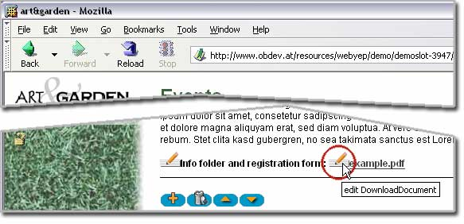 The Attachment Element in action.
Clicking the "Edit" button opens the File Upload Window.
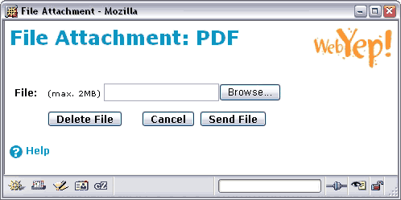 The File Upload Window.
Attributes of the Attachment Element
The Dreamweaver inspector showing the Attachment
Element's attributes
Fieldname
A distinctive name for that element. This name will be displayed in
the page in edit mode to give the user a hint on what this elements content
stands for and to distinguish the different WebYep Elements in a page.
When displaying the download link for the document, WebYep will not use
this name as the link text, but will instead use the filename of the
uploaded document.
Menu
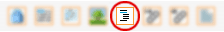 The Menu Element icon in the Dreamweaver object
palette
The Menu Element can be used to build simple menu structures. It is
not intended to be used for main navigation, but for a subnavigation
like
for a "products" submenu.
A click on a Menu Elements item causes a to jump
to a configurable "detail" or "target" page. The target page file is
always the same, regardless which menu
item was clicked, but the contents of its WebYep Elements will be different!
So by linking a WebYep Menu Element with a page that contains WebYep
Elements (by simply setting the "Page" attribute of the Menu
Element) you can build a simple navigation. The target page's WebYep
Elements (like
Long Text or Image Element etc.) will then show different content depending
on which menu item was clicked.
This element is represented by the following PHP code:
Arguments for the webyep_menu() PHP function call: (see "Attributes of the Menu Element" below for details)
"Fieldname": A string – the field name for this element.
true/false: A boolean – the scope for this element. true if the element should have the same content on all pages (global). false if it should have different content on each page it appears on.
"some_page.php": A string – the URL of a page that the menu's items should link to.
"contentFrame": A string (optional) – the name of the frame, that should be the target of the links.
Pass an empty string ("") if you're not using frames.
"": A string – obsolete, pass an empty string ("").
"": A string – obsolete, pass an empty string ("").
The menu items can be edited by the user by simply clicking the "Edit"
button beside the menu in the webpage (when in edit mode). This will
open the Edit Menu Window, in which the user can add/remove menu items,
change their order and create simple hierarchies (by placing section
titles and indenting items).
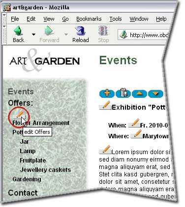 The Menu Element in action - by clicking
the "Edit" button beside the menu, the Edit Menu Window opens
The users can create indented items (submenu items) by simply prefixing the item's text with one or more spaces (or underscores). They can also create submenu titles (preceding the submenu items) by prefixing an item's text with a hash sign ("#").
So a typical menu might look like this:
First main menu item
Second main menu item
#A submenu title
_First submenu item
_Second submenu item
Third main menu item
Dynamic or static menu
A WebYep Menu is represented as an unordered list using the <ul> and <li> HTML tags. Submenu trees are represented by nesting such lists. Submenus can be expanded/collapsed by clicking on the submenu's title, if the WebYep Menu is configured to use JavaScript (the default) in the WebYep configuration file config-inc.php:
$webyep_sMenuType = "listJS";
Use a value of "list" instead, if you do not want to use JavaScript and want a static menu instead.
Note that the listJS style uses JavaScript in backward compatible way so that when JavaScript is not available, a static menu (with all subtrees expanded) will be presented. This is also to ensure the menu's accessibility.
Formatting the menu
WebYep assigns special CSS style classes to the Menu Element's items,
depending on what kind of item it is (a normal menu item or a submenu title) and its state (e.g. the currently selected item or an expanded submenu's title). By defining styles for these CSS classes in your page's stylesheet, you have detailed control of the look of your WebYep Menu.
List of CSS classes:
CSS Class Name
Assigned, if....
WebYepMenuItem
the item is a normal menu item (not a submenu title).
WebYepMenuTitle
the item is a submenu title.
WebYepMenuCurrentItem
the item is the currently selected menu item.
WebYepMenuTitleExpanded
the item is a submenu title and its tree is currently expanded.
WebYepMenuFirstItem
the item is the first item in its tree (used e.g. for separation lines)
Every menu item is a list item (<li>) that has a link (<a>) inside. The CSS classes are assigned to both, the <li> and the <a> tag. Sometimes there are assigned more than one class. For example the title of an expanded submenu will have the two classes "WebYepMenuTitle" and "WebYepMenuTitleExpanded assigned.
Important: Please also look out for examples on how to use CSS to design a WebYep Menu on our website: http://www.obdev.at/webyep/
The Dreamweaver inspector showing the Menu Element's
attributes
Menu name
A distinctive name for that element. This name will be displayed in the page
in edit mode to give the user a hint on what this elements content stands for
and to distinguish the different WebYep Elements in a page.
When set to "for this doc only" the elements content is unique
for this page - even if another element on a different page has the same
name. If set to "for all documents" the content will be the same
on all pages for elements of this kind that use the same name.
Page (URL)
Name (or full URL) of the page that is to be opened when a visitor clicks
a menu item. Usually this will be the same page the Menu Element is on (thus "reloading"
the same page, just with different content).
Target frame - when using framesets
If you want the target page ("Page" attribute) to opened in a different browser
window or frame, set this attribute to the frames name. See the description
of the "Page (URL)" attribute above.
Notice: You can manually create links to a menu item's target page
by adding the following to the URL of the link:
?WEBYEP_DI=x
where "x" stands for the ID of the menu item - e.g.:
some_menu_item_page.php?WEBYEP_DI=1
You can find out the ID of a menu item by simply clicking the menu item and observing
the URL displayed in your browsers address field. At the end of the
displayed URL you should see the "WEBYEP_DI=xxx".
The ID of a menu item has nothing to do with it's position in the menu (order)!
Loop
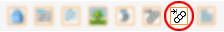 The icons for the Loop Start and Loop End
Elements in the Dreamweaver object palette
To repeat a block of HTML content and/or WebYep Elements in a page you
can use the Loop Element. The user can define the number and order of
the blocks, which can contain any HTML, JavaScript or PHP content like
static text, images or any WebYep Element. Of course the content
of the repeated WebYep Elements will be different for every repetition.
The Loop Start Element is represented by the following PHP code:
<?php foreach (WYLoopElement::aLoopIDs("Loopname") as $webyep_oCurrentLoop->iLoopID) { $webyep_oCurrentLoop->loopStart(true); ?> more...
Arguments for the aLoopIDs() PHP function call: (see "Attributes of the Loop Element" below for details)
"Loopname": A string – the field name for this element.
Arguments for the loopStart() PHP function call: (see "Attributes of the Loop Element" below for details)
true/false: A boolean – whether the loop control buttons should be inserted automatically. true if the loop controls should be inserted automatically at the top of each block. false if not. You then need to insert the PHP code for these control buttons manually – see "Automatic controls" below.
The Loop End Element is represented by the following PHP code:
<?php $webyep_oCurrentLoop->loopEnd(); } ?>
Using the Loop Element
To use the Loop Element, create some content in you page that is to
be repeated and then place a Loop Start before and a Loop End
Element
after that content.
Exactly positioning the Loop Element is important:
When repeating content in your page it is important to
make sure the resulting HTML code is valid! Repeating a <p> tag
without the closing </p> tag for example would result in invalid
HTML which will be rendered incorrectly by the browser.
By using the positioning technique described in the introduction
to the tutorials ("Positioning
the cursor") you can place the Loop Start/End Elements exactly
before and after a specific HTML tag and thus make sure the whole
HTML tag (including its end element) gets repeated.
In rare cases it might be necessary to position the Start/End
Elements "by hand" in Dreamweaver's code view. The Elements
are tiny PHP code blocks enclosed in "<?php" and "?>" and
can be moved wherever you need them in code view.
In these rare cases when the result of a loop seams wrong,
it is a good idea to check the validity of the resulting HTML code: Simply
open the page in a browser, go to WebYep edit mode and create some loop
blocks. Then leave edit mode and take a look at the resulting HTML code
by viewing the code directly in the browser. Maybe also copy the HTML
code
and paste
it into
an empty Dreamweaver document: Dreamweaver can check the HTML code for
you...
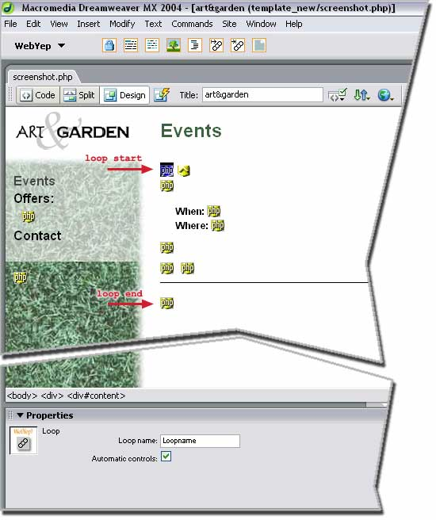
For the visitor the content simply repeats with different content for
all WebYep Elements inside the loop for every repetition:
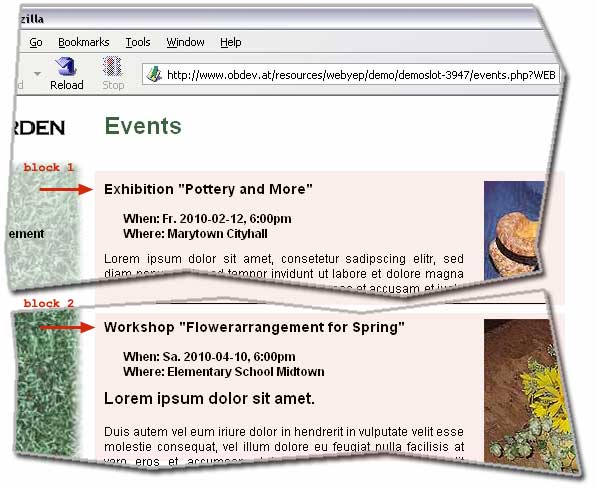
with the loop controls that usually appear above each block when
in edit
mode:
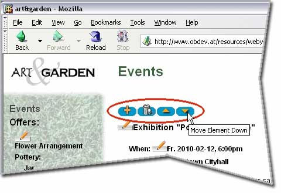
The icons of the loop controls mean:
Add new block below this one
Delete this block
Move block up (towards page
start)
Move block down (towards page end)
The Dreamweaver inspector showing the Loop
Start Elements attributes
Loop name
A distinctive name for that element. This name will be displayed in
the page in edit mode to give the user a hint on what this elements content
stands for and to distinguish the different WebYep Elements in a page.
Important: If you
need more
than one Loop Element on a page, you have
to make sure that the WebYep Elements inside the two loops do not share
the same names. Use different names for all WebYep Elements in
all Loops of one page!
Automatic controls
The loop controls are usually placed automatically at the top of each
loop block, right where the Loop Start is positioned. In some situations
this is not appropriate, as the Loop Start might be in a place where
no content (like the loop control button icons) is allowed -
e.g. between a <table> tag and a <tr> tag.
In theses cases you should uncheck the "Automatic controls" attribute
and place the controls "by hand" by inserting the following piece of
PHP code:
<?php $webyep_oCurrentLoop->showEditButtons(); ?>
Attributes of the Loop End Element
The Loop End Element has no adjustable attributes.